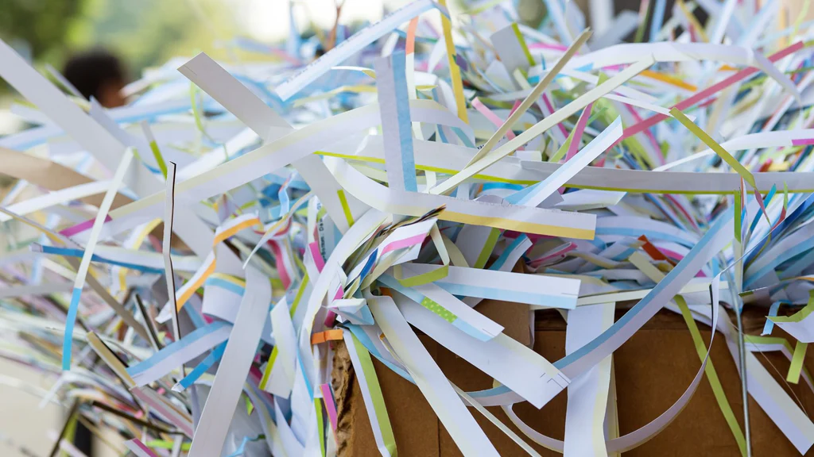

Giấy Nẩy Mầm – Giải Pháp Bền Vững
Cho Một Tương Lai Xanh
Bởi TDT Blog

Trong thời đại mà tính bền vững ngày càng trở nên quan trọng, giấy nẩy mầm nổi lên như một lựa chọn hoàn
hảo, thân thiện với môi trường, thay thế cho giấy truyền thống. Không chỉ giúp giảm thiểu rác thải, giấy
nẩy mầm còn khuyến khích bảo vệ thiên nhiên. Vậy giấy nẩy mầm là gì, và tại sao bạn nên cân nhắc sử dụng
nó? Hãy cùng khám phá tất tần tật về loại giấy đặc biệt này, từ định nghĩa, lợi ích đến các ứng dụng phổ
biến trong cuộc sống.
Giấy Gieo Nẩy Mầm Là Gì?
Giấy nẩy mầm, hay còn gọi là giấy trồng cây, là loại giấy có thể phân huỷ và có chứa các hạt giống bên
trong. Khi được trồng xuống đất, giấy sẽ phân hủy và hạt giống sẽ nảy mầm, phát triển thành cây, hoa
hoặc rau. Được làm từ vật liệu tái chế, giấy nẩy mầm kết hợp giữa nghệ thuật làm giấy và làm vườn bền
vững, mang đến một giải pháp sáng tạo giúp giảm thiểu tác động đến môi trường.
Giấy Nẩy Mầm Được Làm Như Thế Nào?

Quá trình sản xuất giấy nẩy mầm bắt đầu với việc nghiền bột giấy tái chế rồi trộn với hạt giống. Hỗn hợp
này sau đó được dàn mỏng và sấy khô thành từng tờ giấy. Vì giấy được làm mà không sử dụng hóa chất hay
màu nhuộm độc hại, nên hoàn toàn an toàn cho môi trường và đảm bảo hạt giống có thể nảy mầm khi được
trồng. Quy trình sản xuất thân thiện với môi trường này giúp giấy nẩy mầm trở thành lựa chọn yêu thích
của những người mong muốn giảm thiểu dấu chân carbon của mình.
Các Ứng Dụng Của Giấy nẩy mầm
Giấy nẩy mầm có thể được ứng dụng trong nhiều cách sáng tạo khác nhau, khiến nó trở thành lựa chọn đa
năng cho cá nhân, doanh nghiệp và các hoạt động quảng bá. Dưới đây là một số ứng dụng phổ biến:
-
Thiệp Mời Đám Cưới:
Gây ấn tượng với khách mời bằng những thiệp mời đám cưới làm từ giấy nẩy mầm, mà họ có thể trồng để
cho ra những loài hoa, rau củ, tạo nên kỷ niệm lâu dài về ngày trọng đại của bạn.
-
Thiệp Chúc Mừng:
Gửi những lời chúc thân thiện với môi trường bằng các thiệp chúc mừng từ giấy nẩy mầm cho sinh nhật,
lễ hội hay các dịp đặc biệt khác, giúp thông điệp của bạn mang theo hạt giống gieo trồng thành những
điều tốt đẹp.
-
Danh Thiếp: Tạo nên dấu ấn bền vững với danh thiếp từ giấy nẩy mầm, không chỉ đại diện cho
thương hiệu của bạn mà còn thúc đẩy ý thức bảo vệ môi trường.
-
Quảng Cáo Sự Kiện: Sử dụng giấy nẩy mầm cho tờ rơi, brochure hay tài liệu quảng bá, đảm bảo
sự kiện của bạn không chỉ để lại dấu ấn mà còn đóng góp tích cực cho hành tinh.
Cách Trồng Giấy Nẩy Mầm
Trồng giấy nẩy mầm rất đơn giản và thú vị. Làm theo các bước sau để thấy giấy của bạn biến thành cây:
-
Chuẩn Bị Đất:
Chọn chậu có khả năng thoát nước tốt hoặc khu vực ngoài trời có đất tơi xốp,
màu mỡ. Làm ẩm nhẹ đất.
-
Trồng Giấy:
Đặt giấy nẩy mầm lên bề mặt đất và phủ nhẹ một lớp đất mỏng lên trên, khoảng 3mm.
-
Tưới Nước:
Sau khi trồng, tưới nước đủ ẩm cho giấy, đảm bảo giấy được thấm nước nhưng không
quá đẫm.
-
Ánh Sáng và Chăm Sóc:
Đặt chậu cây ở nơi có nhiều ánh sáng tự nhiên. Giữ đất ẩm bằng cách
tưới nước thường xuyên, tránh tưới quá nhiều.
-
Theo Dõi Cây Nảy Mầm:
Với sự chăm sóc đúng cách, hạt giống sẽ nảy mầm và sớm xuất hiện những
cây non. Tiếp tục tưới nước khi cần và tận hưởng thành quả xanh tươi của mình!
Giấy nẩy mầm không chỉ là một lựa chọn thay thế thân thiện với môi trường cho giấy truyền thống mà còn là
một bước nhỏ hướng tới một hành tinh xanh hơn. Bằng cách chọn giấy nẩy mầm, bạn không chỉ giúp giảm rác
thải mà còn góp phần vào việc bảo vệ thiên nhiên. Cho dù bạn đang lên kế hoạch cho sự kiện, gửi thiệp
chúc mừng hay tìm kiếm giải pháp kinh doanh bền vững, giấy nẩy mầm luôn mang lại những lợi ích đáng giá.